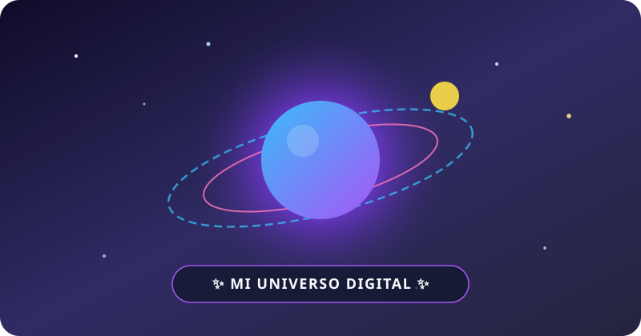

¿Cómo hace una página web que creamos en la computadora para llegar al celular de cualquier persona en el planeta? ¡Descubrilo en 4 pasos súper simples!
Cuando creamos una página en la compu, guardamos un archivo de texto llamado index.html. Ese archivo es como la receta de una torta o el guion de una película: tiene escrito qué títulos, colores, fotos y sonidos van en pantalla.
Es texto con etiquetas como <h1>, <img> o <audio>.
Es el traductor mágico: lee el código y dibuja los botones y colores.
file://
Al abrirlo con doble clic, solo se ve en TU compu porque está en tu disco C:.
Cuando el link empieza con file:///C:/Users/.../Vicky/index.html, le está diciendo al celular de tu amiga: "Buscá adentro de tu propio teléfono la carpeta C:/Users...". ¡Como el celular de ella no tiene el disco de tu compu, necesitamos subirlo a un Servidor en Internet!
Tu página principal siempre se llama index.html (es la puerta de entrada). Adentro de la misma carpeta Vicky guardamos las imágenes, los audios de Suno y las demás páginas conectadas con vínculos (<a href="...">):
Guardado en audios/ambiente-espacial.wav:
Tocá para saltar al archivo cuento-estelar.html:
El navegador salta de un archivo HTML a otro:
Un Servidor es simplemente una computadora súper rápida que está prendida las 24 horas del día conectada a Internet. Cuando subimos tu carpeta a un servidor gratuito como Netlify, nos dan una URL (la dirección única de tu casa en Internet).
👇 ¡Tocá cada bloque de color para escuchar y descubrir qué significa cada parte de una URL!
Así pasa tu creación de estar guardada en el Escritorio a verse en cualquier celular del mundo:
Tenemos esta carpeta en el Escritorio con index.html, los audios y las imágenes.
Entramos a app.netlify.com/drop y soltamos la carpeta entera en la página.
El servidor de Netlify la publica al instante con tu propia URL https://...
Como vos tenés los archivos .html de tus cuentos y de tu juego en tu propia compu, escribí acá abajo cómo se llaman esos archivos. ¡Esta página te va a crear y descargar tu propio archivo index.html con los vínculos listos para que subas toda tu carpeta junta a Netlify!
index.html dónde están tus archivos sin preguntarte la ruta C:\Users\...?
¡Porque usa Rutas Relativas (de vecinos)! Mientras pongas los 3 archivos juntos adentro de la misma carpeta, el navegador busca automáticamente al archivo de al lado, sin importar en qué compu o servidor del mundo esté esa carpeta:
Web-Vicky)..html de tu cuento y el .html de tu juego (más las imágenes o audios si tienen).index.html principal y guardalo adentro de esa misma carpeta Web-Vicky.Web-Vicky a app.netlify.com/drop ¡y tu juego y tu cuento quedan publicados en Internet!